Chessable Edge
Chessable Edge was Chessable's design system and UI component library. We built it in React with Clutch, a visual builder for React, and published it to npm as @chessable/edge, with its core split into a package of its own. Three teams were using it in production.
The video is the guide for developers I made for the teams adopting it. It covers what Edge is, how Clutch works, how to get started, and where the system was going next: a shared process, a public roadmap and documentation generated with Storybook.
openroadie
openroadie's interface runs on @roadiehq/ui, a design system I co-led. It has about sixty components documented in Storybook, from forms, tables and drawers to the AI elements for agent conversations: messages, reasoning, tool calls and chain of thought. Its tokens cover color for light and dark themes, type, sizing, motion and z-index, and the code editor has a token set of its own.
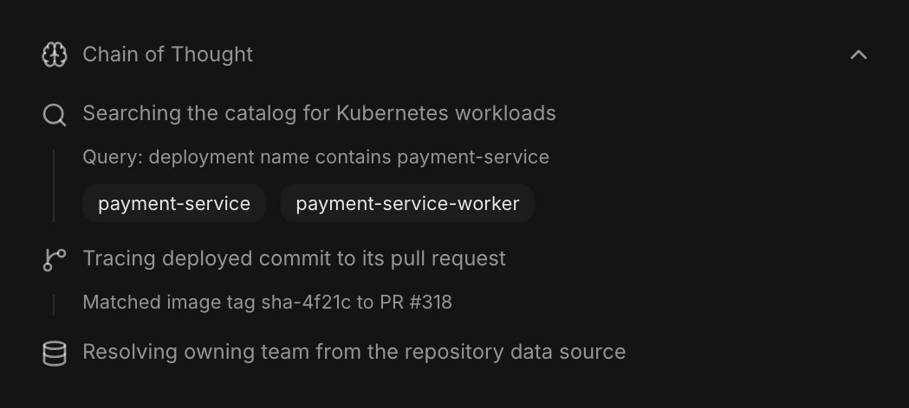
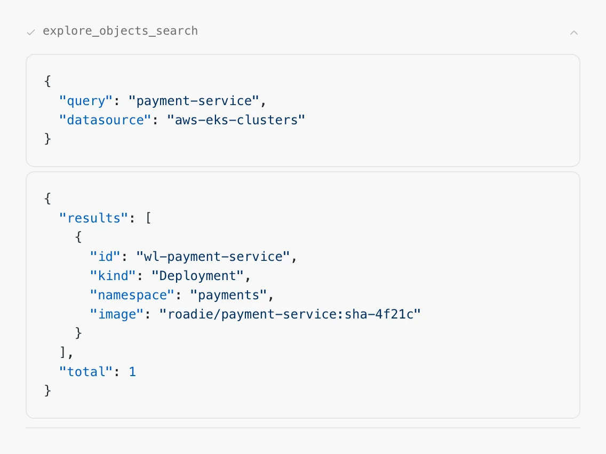
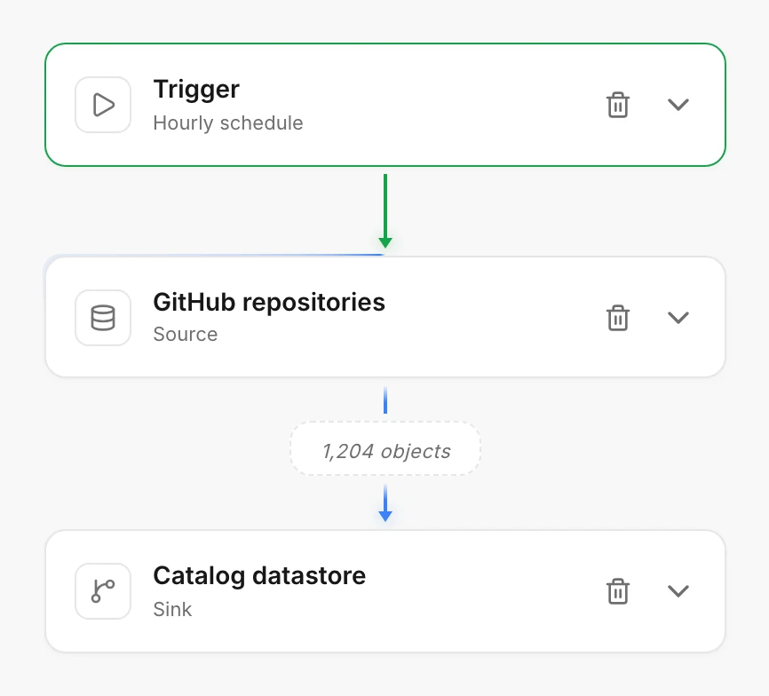
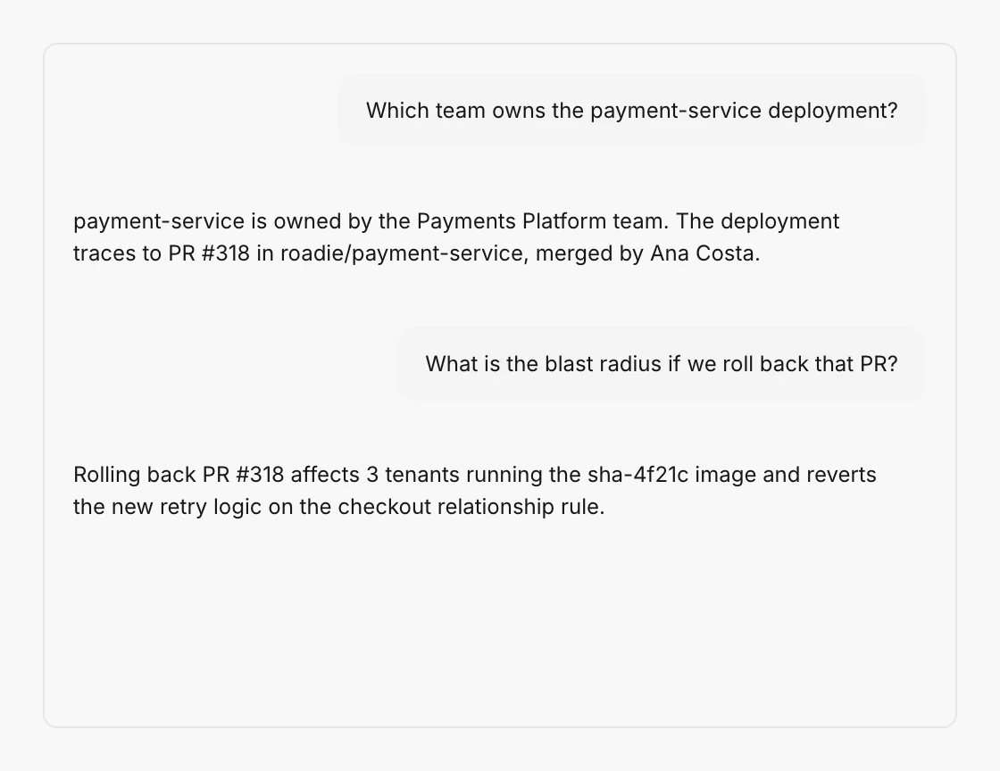
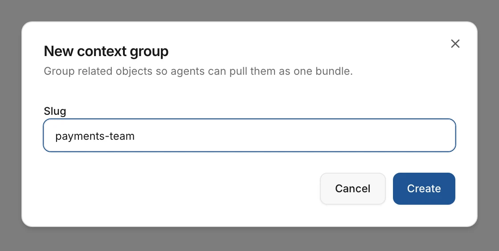
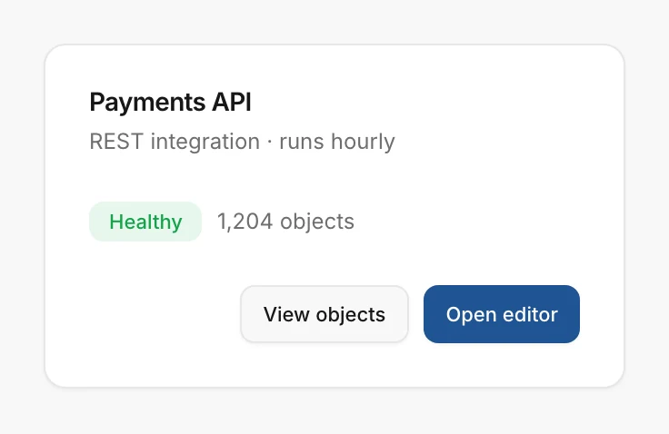
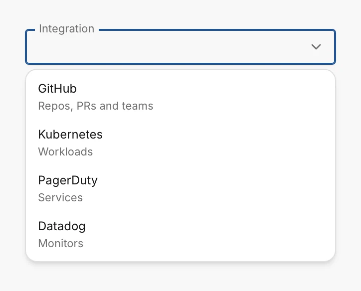
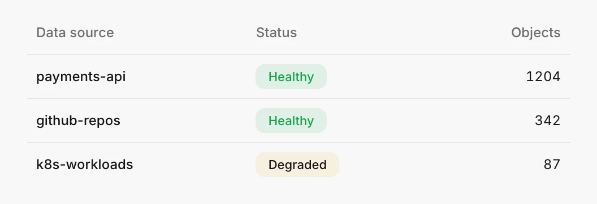
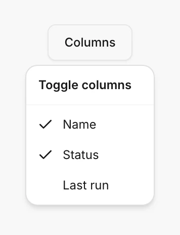
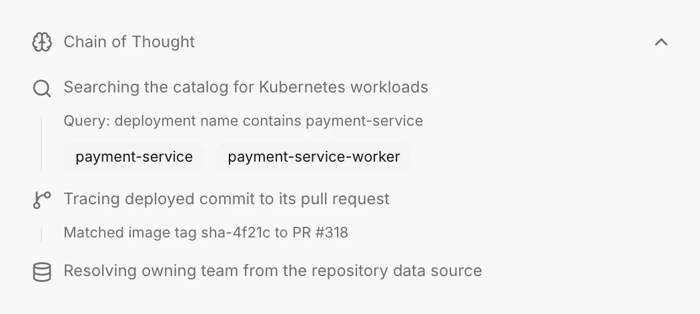
Koda
Koda's interface runs on @koda/ui, the design system I built for it. It has forty components documented in Storybook, from buttons, dialogs and file trees to the parts of an agent session: tool calls, approval and question cards, the composer and the badge that shows who shared a session. Its tokens cover color for four themes, type, spacing, radius, motion and z-index, and a lint rule rejects hardcoded colors and sizes anywhere in the app. Every story also runs as a test in all four themes, with accessibility checks.
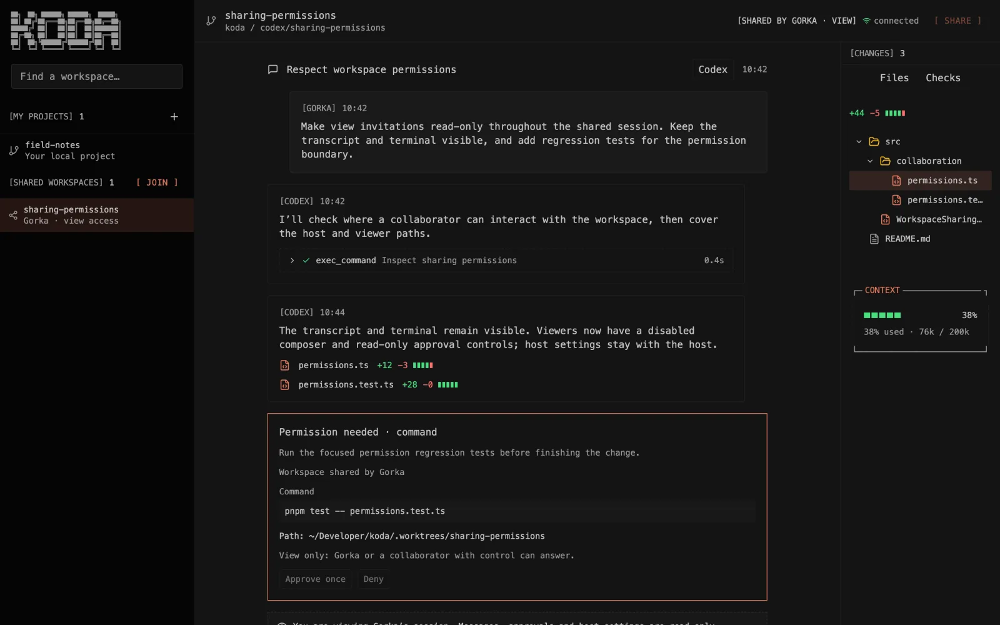
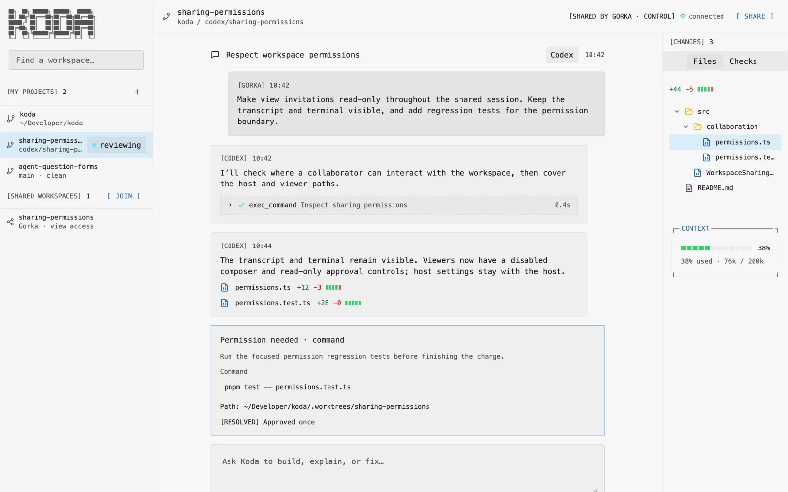
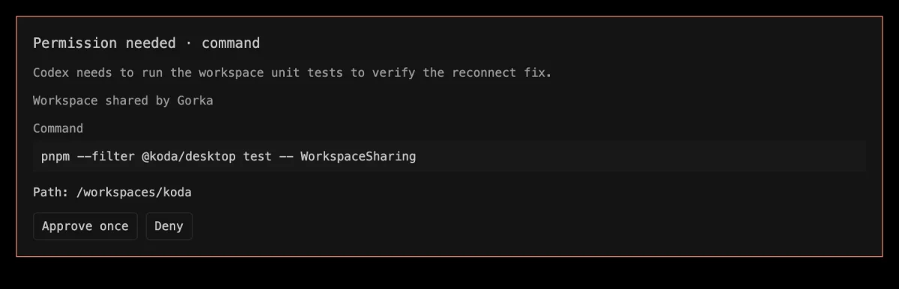
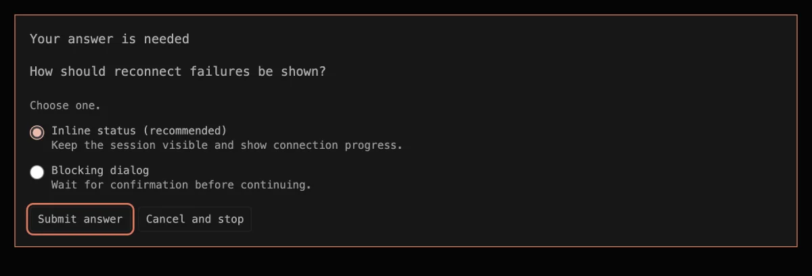
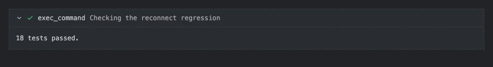
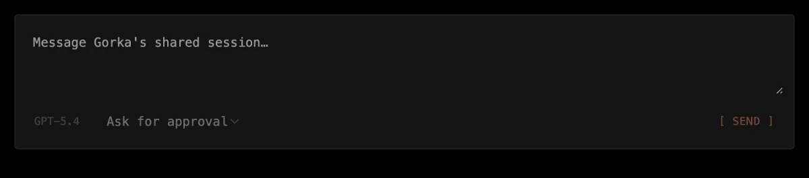
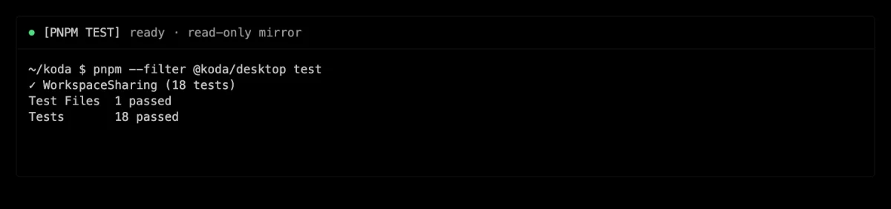
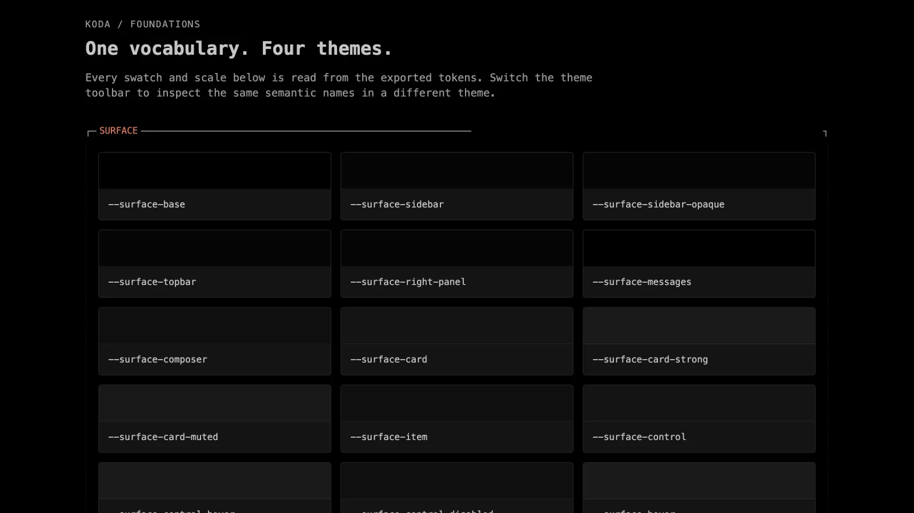
Earlier
- BBVA CellsUI engineer on Cells, a hybrid component library and design system for BBVA's mobile apps, built on Polymer and web components and shown at Google I/O 2016. 2015–2016.
- William HillA hybrid component library and design system for the sportsbook redesign. I prototyped and built parts of it with the in-house designers. 2012–2014.